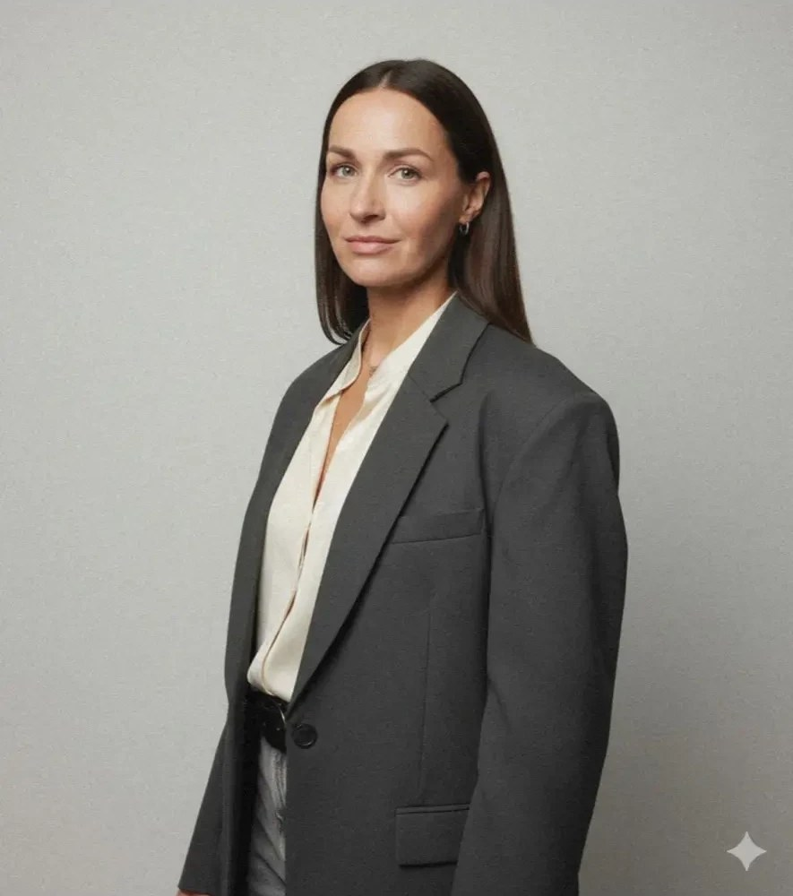

01
Коммерческие обучения
Организую обучения для заказчиков: от заявки и согласования до проведения и закрывающих документов.
Ведущий специалист АНО «Федеральный центр компетенций в сфере производительности труда». Организую коммерческие обучения, веду учёт ресурсов проектов на внутренних платформах и строю аналитику, по которой руководитель видит, что происходит с планом, лидами и выручкой.
Порядок в процессах, прозрачность в цифрах: от заявки на обучение до закрытия проекта.

Организую обучения для заказчиков: от заявки и согласования до проведения и закрывающих документов.
Слежу за сроками, документами и порядком в проектах, чтобы ничего не терялось между этапами.
Контролирую и закрываю списание ресурсов на конкретные проекты во внутренних платформах и системах проекта, чтобы затраты были видны по каждому из них.
Анализирую клиентов, план-факт и результаты вебинаров. Превращаю выгрузки в понятные отчёты и дашборды.
Задача: руководителю нужно в одном окне видеть, выполняется ли план, как менеджеры работают с лидами и откуда приходят деньги.
12 показателей дашборда в пяти группах:
Цифры условные: структура повторяет рабочий дашборд, реальные данные не публикуются. Суммы — в млн ₽.
Обучения, порядок в проектах, учёт ресурсов и аналитика — буду рада обсудить вашу задачу.